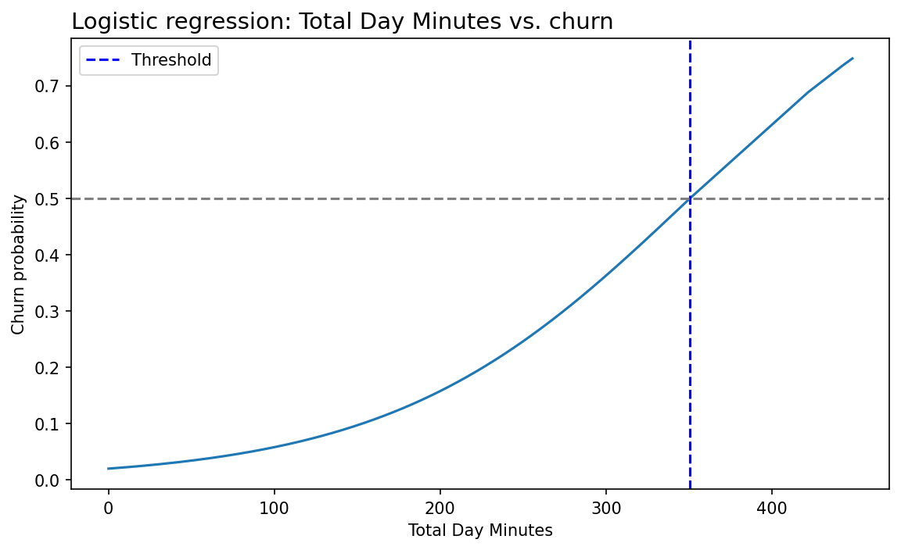

Telefonica Churn | Zielgruppen für zwei Kundenbindungs-Kampagnen
Abwanderungsanalyse für einen Markteintritt in Florida
Datenaufbereitung, Indikatortypen und Methodik
SQLite-Datenbank aus dem StackFuel-Abschlussprojekt
| Schritt | Umfang | Anmerkung |
|---|---|---|
| churn_data | 3.349 Zeilen × 17 Spalten | eine Zeile je Kunde, Zielspalte churn |
| cities | 12 Zeilen | Stadtteile, 1:1 über area_code |
| Join | 3.349 × 18 | local_area_code = cities.area_code |
| Bereinigt | 3.333 × 18 | 16 vollständig leere Zeilen entfernt |
Querschnittsaufnahme ohne Datumsspalte. Es gibt keinen Zeitverlauf, jede Aussage bezieht sich auf einen Stand.
Was die Prüfung der Rohdaten zutage gefördert hat
Der negative Anrufzähler war in der ursprünglichen Musterlösung nicht aufgefallen. Er verschiebt genau den Indikator, auf dem später eine der drei Empfehlungen beruht.
Warum nicht jede Spalte gleich behandelt wird
| Typ | Spalte | Verfahren | Ergebnis |
|---|---|---|---|
| kategorial | international_plan | Gruppenvergleich der Raten | 42,4 % gegen 11,5 % |
| ganzzahlig | customer_service_calls | Rate je Ausprägung, Knick suchen | Sprung beim 4. Anruf |
| stetig | total_day_minutes | logistische Regression, 50-Prozent-Punkt | 350,74 Minuten |
Bei einer stetigen Größe gibt es keine natürlichen Gruppen. Eine Schwelle per Augenmaß wäre willkürlich, deshalb kommt hier die Regression zum Einsatz und nicht bei den anderen beiden.
statsmodels Logit auf total_day_minutes

Ein einzelner Prädiktor, gerechnet auf dem vollständigen Datensatz. Der 50-Prozent-Punkt liegt bei 350,74 Minuten. Das Pseudo-R² von 0,052 sagt zugleich, dass die Tagesminuten allein den Großteil der Abwanderung nicht erklären.
Schwellenwert bestimmen statt generalisieren
Ein Split würde die Datenbasis für diese Herleitung nur verkleinern, ohne die Aussage zu verbessern. Entsprechend gibt es keine Testmetrik. Die Prüfung liegt in der Datenqualität und in der Frage, wie viele Kunden ein Indikator tatsächlich trifft.
Aussagegrenzen, offen benannt
Reproduzierbar über fünf nummerierte Notebooks
Jeder Bereinigungsschritt, jede Schwelle und jede Aussagegrenze ist im Notebook nachvollziehbar dokumentiert. Wo eine Zahl nicht trägt, steht das dabei.